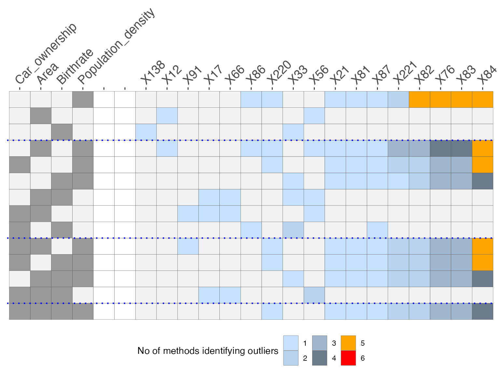

Introduction to dobin
Sevvandi Kandanaarachchi
dobin.RmdDOBIN (Distance based Outlier BasIs using Neighbours) (Kandanaarachchi and Hyndman 2019) is an approach to select a set of basis vectors tailored for outlier detection. DOBIN has a strong mathematical foundation and can be used as a dimension reduction tool for outlier detection. The R package dobin computes this basis. The DOBIN basis is constructed so that the first basis vector is in the direction yielding the highest knn distance and the second basis vector is in the direction giving the second highest knn distance and so on. Details on the construction of DOBIN can be found here.
Installation
You can install the development version from GitHub.
install.packages("devtools")
devtools::install_github("sevvandi/dobin")Example
We consider the dataset Election2005 from the R package mbgraphic for our example. This dataset is discussed in (Unwin 2019a). The figure below shows the space spanned by the first two DOBIN vectors. In this space we see that observation 84 is the most outlying observation followed by observations 76, 83, 82, 221, 21, 87 and 81.
data <- Election2005[, c(6, 10, 17, 28)]
names(data) <- c("Area", "Population_density", "Birthrate", "Car_ownership")
out <- dobin(data, frac=0.9, norm=3)
labs <- rep("norm", dim(out$coords)[1])
inds <- which(out$coords[, 1] > 5)
labs[inds] <- "out"
df <- as.data.frame(out$coords[, 1:2])
colnames(df) <- c("DC1", "DC2")
df2 <- df[inds, ]
ggplot(df, aes(x=DC1,y=DC2)) + geom_point(aes(shape=labs, color=labs), size=2 ) + geom_text(data=df2, aes(DC1, DC2, label = inds), nudge_x = 0.5) + theme_bw()
As the first DOBIN vector is useful in distinguishing outliers we explore its coefficients.
out$vec[ ,1]
#> [1] 0.008493392 0.997899717 0.040062008 -0.050190164We see that the second variable which is population density is the main contributor to outliers in this dataset. Next we draw the O3 plot using OutliersO3 package (Unwin 2019b). O3 plots are introduced in (Unwin 2019a). The O3 plot can identify outliers by using 6 different outlier detection methods. Therefore, it acts as an ensemble method. In addition, it also identifies outliers in axes-parallel subspaces.
data <- Election2005[, c(6, 10, 17, 28)]
names(data) <- c("Area", "Population_density", "Birthrate", "Car_ownership")
O3y <- O3prep(data, method=c("HDo", "PCS", "BAC", "adjOut", "DDC", "MCD"))
O3y1 <- O3plotM(O3y)
O3y1$gO3 The O3 plot is organised in such a way that the outlyingness of the observations increase to the right. The columns on the left indicate the variables, the columns on the right indicate the observations, the rows specify the axis parallel subspaces and the colours depict the number of methods that identify each observation in each subspace as an outlier. From this plot we see that observation \(X84\) is identified as an outlier by \(5\) methods in \(4\) subspaces, \(4\) methods in \(3\) subspaces, \(3\) methods in \(1\) subspace and by \(1\) method in \(1\) subspace. \(X84\) is arguably the most outlying observation in this dataset. The observations \(X83\), \(X76\), \(X82\) are also identified as outliers by \(5\) methods in the dimension of population density. They are also identified as outliers by multiple methods in different subspaces.
We see that DOBIN highlights the exact outliers identified by the O3 plot, in a space spanned by the first 2 DOBIN vectors. We note that this is a projection of the original space. More examples are discussed in our paper.
References
Kandanaarachchi, Sevvandi, and Rob J Hyndman. 2019. “Dimension Reduction for Outlier Detection Using Dobin.” Working Paper. https://www.researchgate.net/publication/335568867_Dimension_reduction_for_outlier_detection_using_DOBIN.
Unwin, Antony. 2019a. “Multivariate Outliers and the O3 Plot.” Journal of Computational and Graphical Statistics. Taylor & Francis, 1–11.
———. 2019b. OutliersO3: Draws Overview of Outliers (O3) Plots. https://CRAN.R-project.org/package=OutliersO3.